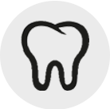

-

충치치료부터 임플란트까지,
임정은 대표원장에게 맡겨주세요 -


무통마취, 멸균소독 시스템 등
오직 환자 맞춤 진료를 통해
더이상 공포감을 주는 치과가 아닌
안전하고 편안한 치과로 모십니다 -
치료 도중에 담당 주치의가 바뀔 염려 없이,
오직 처음 진단했던 대표원장이
끝까지 책임진료합니다

임플란트

보철치료
- 
치주치료

일반진료


앞니의 옆면, 잇몸경계면, 안쪽면 충치치료
안녕하세요모란역 정은치과 입니다.앞니에 충치가 있다면 심미적 이유로활짝 웃기가 힘듭니다.앞니는 씹을 때 큰 힘이 가해지지 않기 때문에작은 충치는 레진치료가 가능합니다.간혹 치아의 안쪽으로도 충치가 생기는데이런 경우는 거울로 봤을 때 잘 보이지 않으므로주기적인 치과 방문을 통해 알 수 있습니다. 안쪽면 / 옆면 왼쪽 사진은 앞니의 안쪽면에 충치가 있고, 오른쪽 사진은 앞니의 옆면에 충치가 있습니다. 왼쪽 사진의 충치가 더 커보이며, 오른쪽은 갈색으로 충치가 진행 중임을 알 수 있습니다. 충치를 제거한 후의 사진입니다. 왼쪽은 생각했던 것처럼 매우 깊으나 신경이 노출되지 않았고, 오른쪽은 직접 제거해보니 보기보다는 좀 깊은 편이었습니다. 물론 그래도 왼쪽 사진의 충치가 더 깊고 신경치료의 가능성이 높습니다. 하지만 두 분 다 마취를 하지 않고 진행했는데 안시리다고 하셔서 신경치료의 가능성이 줄었습니다. 레진으로 충전한 모습입니다. 왼쪽은 시리지 않게 베이스를 깔고 충전했고, 오른쪽은 레진이 살짝 밝지만 안쪽으로 접근해서 충치를 제거하고 충전했기 때문에 정면에서 봤을 때는 전혀 튀지 않았습니다. 옆면 / 잇몸 경계면 왼쪽 사진의 충치는 앞니 옆면인데 부위가 크고 깊었으며, 오른쪽 사진의 충치는 치아와 잇몸의 경계부위에 있었는데 충치 자체는 깊지 않았으나 치경부마모증 양상이 함께 보였습니다. 충치를 제거한 사진입니다. 왼쪽은 예상대로 매우 깊었고 조금만 더 깊었다면 신경이 노출될 거 같았습니다. 오른쪽은 충치 자체는 깊지 않아서 마취하지 않고도 충분히 제거 가능했으며, 충치 제거한 치아들 사이에 있는 가운데 치아는 예전에 레진으로 옆면을 충전하신거 같은데 마진 부위가 착색, 변색 된게 약간 보입니다. 레진으로 마무리한 사진입니다. 왼쪽은 베이스를 깔고 그 위에 레진 충전을 했는데 환자분이 다음 내원시에도 아프지 않다고 하셔서 신경치료는 들어가지 않았습니다. 오른쪽은 하늘색 화살표 치아의 충치부위는 레진으로 충전했고 분홍색 화살표 치아는 변색된 곳만 살짝 갈아서 다듬어 드렸습니다.심미적으로 중요한 앞니~충치가 의심된다면빨리 치과를 방문해 보세요.간단한 레진치료로쉽고 빠르게 해결할 수 있습니다. 정은치과의원 경기도 성남시 중원구 광명로 2 2층
네이버 블로그
2시간 전

풍치? 잇몸이 내려가는 치주질환! 치주염
안녕하세요모란역 정은치과 입니다.오늘은 치주질환에 대해서 알아보려고 합니다.우리가 보통 풍치라고 알고 있는 잇몸병!!치아는 멀쩡한데 치아를 둘러싼 잇몸뼈,즉, 치조골이 내려가면서 치아가 흔들리게 됩니다.나무가 흔들리지 않고 곧게 서있으려면흙이 충분히 나무를 둘러싸고 있어야겠죠?치아도 마찬가지 입니다.치아를 둘러싼 잇몸뼈가 튼튼해야 내 치아를 오래 사용할 수 있어요.잇몸뼈가 점점 흡수되면서 내려가는 것을우리는 흔히 잇몸뼈가 녹는다고 말하는데요.그 잇몸뼈가 녹게하는 가장 큰 원인은 치석입니다.치석이 치아주변에 쌓이면 치아주변의 뼈가 조금씩 녹으면서잇몸은 염증이 생겨 빨갛게 붓고 피가 나게 됩니다.1년에 한번씩 꼭 스케일링을 받으라고 권장하는 것도내 잇몸뼈를 튼튼히 해서 내 치아를 좀 더 오래 쓰도록 하자는 것이죠.간혹 스케일링을 받고나서 치아가 더 흔들리는 거 같다,치아 사이가 더 벌어져서 시리고 아프다고 하시는 분들이 계십니다.치아에 외투처럼 덮여있던 치석이 떨어져 나가니처음에는 더 시리고 치아사이가 벌어진 것처럼 느낄 수 있습니다.치석이 붙잡고 있다가 없어지니 더 흔들리는 것 같지만시간이 지나면서 더 단단해집니다.이런 것들이 두렵고 귀찮아서 방치하게 되면치석이 점점 잇몸뼈를 녹게해서 나중에는너무 흔들려서 발치를 하게 됩니다.잇몸뼈가 녹으면 치아의 뿌리가 점점 길게 노출되면서결국에는 빠지게 됩니다.약간 흔들리는 정도에서는 스케일링을 하고 잇몸치료를 받으면다시 잇몸이 건강해지고 치아도 덜 흔들리게 됩니다.하지만 너무 흔들리는 경우는 빨리 발치를 해야 합니다.이런 치주질환을 치주염이라고 하는데치주염이 심한 치아를 발치하지 않고 계속 가지고 있으면그 치아의 주위 치아까지 흔들리게 됩니다.스케일링도 정기적으로 받으면 치석이 많지 않기 때문에하고나서 시리거나 아프거나 불편한 느낌이 줄어듭니다.1년에 한 번, 건강보험 적용이 되는 스케일링은비용이 15000원~16000원(야간, 토요일은 좀 더 추가됨) 정도 되니내 치아 관리를 위해서 꼭 받으시기 바랍니다!! 정은치과의원 경기도 성남시 중원구 광명로 2 2층
네이버 블로그
2019. 8. 15. 20:32
교정 대신 브릿지 (앞니 심미 회복)
안녕하세요모란역 정은치과 입니다.오늘은 선천적으로 영구치 갯수가 적어앞니 사이가 벌어진 환자분의 케이스를소개하려고 합니다.어렸을 적에 교정도 하셨다는데공간 닫기에 실패하고 유지장치를 하지않아성인이 된 후 다시 치열이 불규칙하게 되어시원하게 활짝 웃기가 어려우셨다고 해요. 치아 사이가 벌어져 있는 모습정중앙 치아와 송곳니 사이의 공간이 크고그 치아들 양쪽 인접치 사이에도 공간이 있어요.인접치간 간격이 좁으면 레진으로 때워보는데정중앙 치아와 송곳니 사이 공간이 너무 커서하기도 힘들고 반대쪽과 비대칭이 돼서 안예쁩니다.그렇다고 임플란트를 하기엔 또 공간이 좁네요. 치아의 공간을 확인해 봅니다.사실 시간이 되고 완벽한 치료를 원하신다면위아래 교정을 다시 하신 후원래 치아만큼의 공간을 확보하고그 자리에 임플란트를 하거나 브릿지를 하면더 예쁜 모양이 나올 수 있어요.하지만 이 분은 교정을 다시 원하지 않으셨고심미적으로 빈 공간만 없어지면 좋겠다고 하셔서양쪽 두 개의 치아를 깎고 중간에 가짜 치아를연결하는 브릿지를 하기로 결정 했습니다. 치아를 삭제해서 브릿지의 기둥을 만듭니다치아를 삭제한 모습이에요.저렇게 치아를 삭제하고 나면치아가 시려지거나 아파질 수 있어요.만약 그런 증상이 있다면 신경치료를 해야 합니다.억지로 참으면 뿌리 끝에 염증이 생겨요.ㅠㅠ 임시치아를 만들어서 경과를 살펴 봅니다.일단 본을 뜨고 임시치아를 만들어 드렸어요.조금 투박하긴 하지만 일단 치아 갯수가3개가 되고 빈 공간이 없어져서환자분은 임시치아에도 매우 만족 하셨답니다.^^ 최종 보철물을 끼우고 점검합니다.드디어 최종 보철물을 끼우는 날입니다.공간이 애매해서 치아 두 개 자리에세 개짜리 보철물이 괜찮을까 했는데치아 크기나 비율이 굉장히 조화롭게 나왔어요.색조도 원래 자연치와 거의 유사하구요.아래 정중앙 치아가 돌출되어서위쪽과 정중선이 일치하진 않지만일반적으로 딱 봤을 때 위쪽 치아의 정중선이중앙이면 좀 더 자연스러워 보입니다.환자분께서 너무 만족해 하셔서저도 기분이 좋았던 케이스입니다.여러가지 이유로 교정이 여의치 않을 때는보철로도 어느 정도 해결할 수 있으니가까운 치과에 방문 하셔서 상담 받아보세요~ 정은치과의원 경기도 성남시 중원구 광명로 2 2층
네이버 블로그
2019. 8. 15. 15:50

스케일링이란 무엇인가?
치석 제거술(스케일링)이란?잇몸병을 일으키는 주원인인 치태(플라크)와 같은 연한 부착물과 치석과 같은 단단한 부착물을 제거하고, 치아 표면을 매끈하고 깨끗하게 해주는 치료를 스케일링 혹은 치석 제거술이라 합니다.우리가 음식물을 먹고 난 후 치아를 깨끗이 닦지 못하면 음식물의 미세한 찌꺼기가 치아에 남아 있어 세균 덩어리의 막을 형성합니다. 이는 치태 혹은 플라크라고 하며 칫솔질에 의해 제거할 수 있습니다. 그리고 시간이 지남에 따라 이러한 세균 덩어리의 막은 타액(침) 내의 칼슘 성분을 흡수하여 단단한 돌처럼 굳어서 치아와 잇몸 사이에 부착하며, 이것을 치석이라고 합니다.치석이 부착하게 되면 잇몸은 검붉은 색으로 붓고 피가 잘 나게 되며 탄력이 없어지고 냄새가 나고, 심하게 진행되면 치아를 둘러싼 뼈(치조골)가 흡수되어 이 뿌리가 노출되는 경우도 있습니다. 그러므로 치석을 가급적 빨리 제거하는 것이 잇몸의 건강 유지를 위해 중요합니다.치석 제거는 어떻게?치석 제거는 보통 작은 칼날 모양의 기구를 사용하여 치아와 잇몸 사이에 부착된 치석을 떼어냅니다. 이렇게 함으로써 치주병, 즉 잇몸병을 예방 또는 치료할 수 있습니다. 근래에는 초음파를 이용하여 치석을 제거하는 초음파 치석 제거기가 개발되어 수기구와 함께 치과에서 많이 사용하고 있습니다. 일반적으로 초음파 치석 제거기를 사용하면 통증과 출혈은 적지만 과민성 치아에 있어서는 좀더 시린 증상을 야기할 수 있습니다.치석 제거 후 이가 시리십니까?이와 같은 치석 제거술을 시행한 후, 불편감을 호소하는 경우가 적지 않습니다. 이런 불편감은 치석이 많은 사람일수록, 잇몸 염증이 심하게 진행된 사람일수록 더 느끼기 쉽습니다. 가장 흔히 호소하는 불편감은 치아가 시리다는 것입니다. 처음 스케일링을 받은 사람들은 치아가 더 민감해져 차고 더운 것에 시림을 호소합니다. 목욕을 하고 난 후 일시적으로 피부가 저항력이 약해지는 것과 마찬가지로 치아도 묶은 때를 벗겨내는 것과 같아 치아 내의 신경이 자극에 민감해지는 것입니다. 이는 시간이 지남에 따라 점차 둔감해져 시린 증상이 없어집니다. 정기적으로 스케일링을 받는 사람은 치석 제거 후 치아가 시림을 호소하는 경우가 줄어듭니다.치석 제거 후 더 불편하십니까?어떤 사람들은 치석제거 후 치아 사이가 벌어지고, 치아가 흔들린다고 느끼는 경우도 있습니다. 치석이 심하게 침착된 경우 잇몸뼈(치조골)를 녹여 치아 주위를 약화시키며 치아는 뼈에 의해서가 아니라 치석에 의해 지탱됩니다. 그 경우 치석을 제거하면 치석이 있던 공간이 드러나 치아가 벌어지는 것처럼 느껴지는 것입니다. 또한 치석에 의해 지탱되던 치아는 치석 제거 후 당연히 흔들리게 되지만 치석에 의해 유지되는 치아는 결국 뽑아야 할 가능성이 많아집니다. 그러므로 치석제거를 하여 잇몸의 염증을 제거하고 흔들리는 치아는 고정하여 건강한 상태로 사용하여야 하며, 벌어진 틈새는 치아 사이를 닦는 치간칫솔을 이용해 청결하게 닦아내야 합니다.다른 치과 치료와 마찬가지로 스케일링을 받을 때도 대부분의 사람들은 긴장을 하고 있으며 주위에서 나는 소리에 민감해집니다. 초음파 치석제거기를 사용할 때 나는 소리를 듣고 치아를 갈아내는 것이 아닌가 하고 생각하는 사람들이 있습니다. 치석 제거는 치아면에 부착된 치석과 착색 물질, 그리고 세균에 의해 병든 치아 표면만을 제거하는 것으로 건전한 치아면에는 전혀 손상을 미치지 않습니다. 치석이 붙어 있는 상태에서는 세균의 작용에 의해 오히려 치아면에 손상을 많이 줄 수 있습니다.스케일링을 또 해야 하나요?대부분의 사람들이 스케일링을 꺼리는 또 하나의 이유는 한 번 스케일링을 받으면 자주 해야 하므로 불편하다는 것입니다. 잇몸이 건강하고 치석이 잘 생기지 않는 사람도 칫솔질만으로는 구강 위생을 유지하기 힘들기 때문에 6개월이나 1년 간격으로 스케일링을 받아야 합니다. 한 번 하면 계속 하는 것이 아니라 원래 건강한 잇몸의 유지를 위해서는 지속적인 치석 제거를 시행하여야 합니다. 피부에 염증이 생길 정도로 목욕을 안 하다가 피부염 치료를 위해 단 한 번만 목욕을 하는 사람은 없을 것입니다. 스케일링은 치아를 목욕시키는 것입니다. 깨끗한 치아를 유지해야 잇몸도 건강하고, 깨끗하게 유지하기 위해 올바른 칫솔질과 치석 제거가 필요한 것입니다.스케일링은 꼭 필요합니다.치석 제거는 건강하고 튼튼한 치아와 잇몸을 위해 필수적인 예방 혹은 치료 방법입니다. 그러나 치석 제거 후에는 일시적인 시림 현상이 있고, 치석을 제거한 부위에 공간이 형성되며 잇몸뼈가 녹아 있던 치아는 흔들리기도 합니다. 그리고 치석에 의해 만성적인 염증 상태였던 부위가 치석 제거 시의 자극에 의해, 일정 시간이 지난 후 자연적으로 치유되는 국한적인 염증 파급이 생길 수도 있습니다. 또한 치석이 많은 사람일수록 치석 제거 시 통증을 더 많이 호소하고 출혈도 많이 됩니다. 이러한 사항들에 의해 사람들은 흔히 치석을 제거하면 치아가 약해진다고 생각합니다. 어찌 보면 스케일링에 대한 두려움에 의해 치석제거를 안 받는 자신을 합리화시키기 위한 변명으로 생겨난 말일 수도 있겠습니다. 요컨대, 치석 제거시 혹은 후의 일시적인 현상으로 인해 치석 제거가 치아를 약하게 만든다는 것은 잘못된 상식이며, 건강하고 깨끗한 치아와 잇몸을 위해 올바른 칫솔질과 더불어 정기적인(1~2회/1년) 치석 제거는 매우 중요합니다.[네이버 지식백과] 스케일링이란 무엇인가? (세브란스병원 건강칼럼, 강남세브란스 치과병원, 강남세브란스병원, 연세대 치과대학병원)스케일링이란 무엇인가?[치석 제거술(스케일링)이란?] 잇몸병을 일으키는 주원인인 치태(플라크)와 같은 연한 부착물과 치석과 같은 단단한 부착물을 제거하고, 치아 표면을 매끈하고 깨끗하게 해주는 치료를 스케일링 혹은 치석 제거술이라 합니다. 우리가 음식물을 먹고 난 후 치아를 깨끗이 닦지 못하면 음식물의 미세한 찌꺼기가 치아에 남아 있어 세균 덩어리의 막을 형성합니다. 이는 치태 혹은 플라크라고 하며 칫솔질에 의해 제거할 수 있습니다. 그리고 시간이 지남에 따라 이러한 세균 덩어리의 막은 타액(침) 내의 칼슘 성분을 흡수하여 단단한 돌처럼 굳어서 치아와 ... terms.naver.com 궁금할 땐 네이버 톡톡하세요!정은치과의원 : 네이버N예약 리뷰 37 · ★5 · 평일 09:30 - 18:30,수요일 09:30 - 20:00,토요일 09:30 - 14:00,일요일 휴무,공휴일 휴무 store.naver.com 정은치과의원 경기도 성남시 중원구 광명로 2 2층
네이버 블로그
2019. 8. 13. 14:28

모란역 정은치과 여름휴가 휴진안내
안녕하세요모란역 정은치과입니다.더운 여름 잘 지내고 계신가요?정은치과에서 여름 휴가를 맞이하여휴진 안내를 하려고 합니다!!8월 19일 ~ 8월 21일까지휴진하오니 내원에 착오없으시길 바랍니다.쉬는동안 재충전해서 더욱 밝아진 모습으로컴백 하겠습니다~!!!감사합니다~^^ 궁금할 땐 네이버 톡톡하세요!정은치과의원 : 네이버N예약 리뷰 37 · ★5 · 평일 09:30 - 18:30,수요일 09:30 - 20:00,토요일 09:30 - 14:00,일요일 휴무,공휴일 휴무 store.naver.com 정은치과의원 경기도 성남시 중원구 광명로 2 2층
네이버 블로그
2019. 8. 12. 16:11

깨진치아 때운부분 질문 드립니다
Q 깨진치아 때운부분 질문 드립니다.10년전쯤 사진에 아래부분이 깨져서 이빨처럼 보이는거로 떼웠는데요지금 플래쉬로 비춰 보니까 금가있는거 보이더라구요...손톱으로 만져봐도 경계선? 이라고 해야되나 이게 느껴지는데 다시 떨어질때까지 그냥 쓰면 될까요??아프거나 하는 통증은 따로 없습니다. A안녕하세요. 하이닥-네이버 지식iN 상담의 임정은입니다.레진으로 때우는 치료를 받으신 것 같은데 통증도 없고 심미적으로도 큰 문제가 안된다면그냥 탈락하실 때까지 더 쓰시면 됩니다.경계부위가 착색되어 눈에 띄거나 심미적으로 문제가 된다면라미네이트나 크라운을 해보실 수 있지만 이런 치료들은 치아 삭제를 동반하는 치료이니잘 생각해보시고 결정하시기 바랍니다.깨진치아 떼운부분 질문 드립니다.10년전쯤 사진에 아래부분이 깨져서 이빨처럼 보이는거로 떼웠는데요 지금 플래쉬로 비춰 보니까 금가있는거 보이더라구요...손톱으로 만져봐도 경계선? 이라고 해야되나 이게 느껴지는데 ... kin.naver.com 궁금할 땐 네이버 톡톡하세요!정은치과의원 : 네이버N예약 리뷰 34 · ★5 · 평일 09:30 - 18:30,토요일 09:30 - 14:00,일요일 휴무,공휴일 휴무,수요일 09:30 - 20:00 store.naver.com 정은치과의원 경기도 성남시 중원구 광명로 2 2층
네이버 블로그
2019. 8. 8. 13:37
치아 빠지고 그대로 놔두면 입이 들어가거나 변형이 생길 수 있나요?
Q 치아 빠지거나 그럼 그대로 놔두면 나이들면 입이 들어가거나 변형이 생길수 있나요?A안녕하세요. 하이닥-네이버 지식iN 상담의 임정은입니다.치아가 빠진채로 그냥 두면 그 상태에 맞게 치아 위치가 변형되거나 근육도 그에 맞게 적응을 합니다.뺀 치아의 맞물리는 치아는 솟을 수 있으며그러면 솟는 치아의 앞뒤 치아 사이에 공간이 커져서 음식물이 잘 낄 수 있습니다.뺀 치아의 앞뒤 치아는 빈 공간쪽으로 기울어질 확률이 있으며그쪽으로 음식을 잘 안씹게 되므로 볼 근육이 약해지고 그게 오래 지속되면 볼이 들어가 보일 수 있습니다.치아 갯수가 적은 쪽으로는 씹는게 불편하므로 많은 쪽으로 주로 씹게 되면 길게 봤을 때 턱관절에도 무리가 갑니다.치아가 빠졌다고 모든 경우에 다 그런 것은 아니지만 장기적으로 봤을 때는 일어날 수 있는 일들을 말씀 드렸습니다.치아가 빠진 갯수가 하나 정도라면 변형 정도가 미미하겠지만 점점 갯수가 늘어난다면 그 정도가 커지겠죠.또한 치아가 빠진 자리는 오래되면 치조골의 폭도 줄어들고 높이도 낮아집니다. 따라서 치아가 빠진 갯수가 많고 그 기간이 오래되면 치조골이 흡수되면서 얼굴 모양이 좀 변할 수도 있습니다. 치아빠지거나 그럼 그대로 놔두면 나이치아빠지거나 그럼 그대로 놔두면 나이들면 입이 들어가거나 변형이 생길수있나요? kin.naver.com 정은치과의원 경기도 성남시 중원구 광명로 2 2층
네이버 블로그
2019. 8. 5. 11:23

인레이 옆면에 음식물이 자꾸 끼고 구멍이 난거 같아요
안녕하세요모란역 정은치과 입니다.오늘은 예전에 인레이를 했던 치아인데옆면에 음식물이 자꾸 끼면서새로운 충치가 생겼을 때!!이 충치치료를 하려면다시 인레이를 해야 하는지크라운을 해야 하는지에 대해알아보겠습니다~ 이 분은 스케일링 하러 오셨다가 충치를 발견하신 분입니다. 음식물이 자주 끼는 것 외에 특별한 증상이 없었기 때문에 충치가 있다는 사실을 전혀 예상하지 못하셨답니다. 오른쪽 방사선 사진을 보면 옆면이 약간 까맣게 보이는 것을 확인할 수 있습니다. 증상이 없었다는 것은 아직 신경까지는 충치가 진행되지 않았다는 뜻이며 그렇기 때문에 신경치료를 지금 들어가지는 않았습니다. 일단 기존 인레이를 제거하고 충치부위를 제거해 보았습니다. 충치가 생각보다 넓고 깊었습니다. 항상 하는 이야기지만 실제 충치는 방사선 사진에서 보여지는 것 보다 좀 더 범위가 크기 때문에 사진에서는 신경치료까지 안갈 것 같아도 실제로는 신경치료까지 가는 경우가 종종 있습니다.왼쪽 사진을 보면 다시 인레이를 하기에는 남아있는 치아량이 적어서 이런 경우는 크라운을 해줍니다. 그리고 오른쪽처럼 충치 제거한 부위와 인레이 제거한 부위를 때워준 후 크라운을 위한 치아 삭제를 합니다. 이 분은 임시치아를 하고 있는 동안에도 시리거나 아프지 않으셨고 최종 보철물을 임시로 붙이고 써보셨을 때도 아무 증상이 없어서 신경치료 하지 않고 완전 부착을 하였습니다.골드 크라운은 열 전도성이 높아서 처음 몇 일, 또는 1~2주간은 차거나 뜨거운 음식에 민감할 수 있습니다. 그러다가 적응이 되니 처음에는 온도차가 적은 미지근한 음식부터 드시기 바랍니다. 골드 크라운은 치아색인 지르코니아나 PFM 크라운 보다 심미적으로는 좀 떨어지지만 치아 삭제량이 좀 더 적기 때문에 치아의 길이가 짧은 경우나 맨 끝 치아라 잘 보이지 않는 경우에 선택하기도 합니다.모란역치과 : 인레이 했던 치아가 깨졌어요(크라운)안녕하세요 모란역 정은치과 입니다.예전에 분명 치료 받았던 치아인데최근 뭔가 깨진거 같고그게 치아가... blog.naver.com정기적인 치과검진을 하시면내가 모르던 충치를 빨리 발견해서더 나빠지기 전에 치료할 수 있습니다.이미 한 번 치료를 받았던 치아라도치료받은 부위 이외의 곳에또 다른 충치가 생길 수 있으니1년에 한 번은 꼭 치과검진 받으세요!! 정은치과의원 경기도 성남시 중원구 광명로 2 2층
네이버 블로그
2019. 8. 2. 15:27
속에서 진행되는 충치가 밖으로 보이는 충치보다 심각한 건가요?
Q 속충치가 겉으로 티나는 충치보다 더 안좋은건가요?A안녕하세요. 하이닥-네이버 지식iN 상담의 임정은입니다.치아의 옆면이나 속에 있는 충치는 육안으로 잘 보이지 않기 때문에 예방하기가 힘들어발견되었을 때 이미 상당히 진행된 경우가 많습니다.겉으로 티나는 충치도 파보면 깊은 경우도 있고 얕은 경우도 있기 때문에이 또한 더 좋다고는 말하기 힘들겠네요.다만 겉에 있는 충치는 '초기' 충치일 경우 열심히 잇솔질 할 경우 더 진행되지 않고 정지될 수 있기 때문에아예 안보이는 충치보다는 관리가 편할 수 있습니다. 속충치가 겉으로 티나는 충치보다 더속충치가 겉으로 티나는 충치보다 더 안좋은건가요? kin.naver.com 정은치과의원 경기도 성남시 중원구 광명로 2 2층
네이버 블로그
2019. 8. 1. 11:40

인레이 했던 치아가 깨졌어요(크라운)
안녕하세요모란역 정은치과 입니다.예전에 분명 치료 받았던 치아인데최근 뭔가 깨진거 같고그게 치아가 깨진건지 보철물이 깨진건지잘 보이지는 않고 까끌거리기만 하고뭔지 모르지만 뭔가 일어났다는막연한 불안함에치과를 내원하시는 분들이 계십니다.일단, 슬픈 예감은 틀린 적이 없다는.. 이 환자분도 뭔가 깨진거 같다는 느낌이 들어서 내원하신 분입니다. 왼쪽 사진을 보시면 하늘색 동그라미가 인레이 부위이며 분홍색 화살표가 깨진 치아 부위를 가리킵니다. 인레이가 깨진 경우 부위가 너무 넓지 않으면 다시 한 번 인레이를 해볼 수가 있는데 이 경우는 주위의 치아가 깨져나가서 다시 한 번 인레이를 하기에는 남아있는 내 치아량이 너무 적었습니다.인레이를 다시 하는 경우에도 기존의 인레이 부위는 제거하고 새로 해야 하기 때문에 내 치아가 너무 적게 남아 있으면 또 다시 내 치아 부위가 깨져나갈 수 있어서 이런 경우는 치아를 완전히 덮어 씌우는 크라운을 해야 합니다.오른쪽 사진처럼 크라운을 하기 위해 치아를 삭제하고 임시치아를 해드렸습니다. 충치가 있거나 아픈 증상이 있었던 치아가 아니기 때문에 신경치료는 하지 않고 진행 하였으며, 크라운을 위해 치아를 많이 삭제 했기 때문에 추후 치아가 시려지거나 아파지면 신경치료를 해야 한다고 설명 드렸습니다. 환자분이 임시치아를 하고 있을 때는 시리지 않았고 그 쪽으로 음식을 잘 안씹어봐서 아픈지는 잘 모르셨기 때문에 신경치료는 하지 않고 보철물을 임시 접착하여 사용해보는 기간을 가졌습니다. 일주일 정도 써보셨을 때 시리진 않은데 뭔가 불편한 느낌이 있다고 하셔서 사진을 찍어보고 교합조정을 한 번 더 해드리고 다시 한 번 일주일을 써보기로 했습니다. 왼쪽 사진처럼 크라운은 하얗게 나오며 뿌리 끝 염증을 보려고 하였으나 보통 일주일만에 염증이 잡히지는 않기 때문에 추후 사진과 비교해 보기 위해 촬영을 해봤습니다.다시 한 번 일주일을 써보셨는데 교합조정으로도 해결되지 않는 뭔가 아프진 않지만 불편한 느낌이 있다고 하셔서 신경치료를 하기로 했습니다. 3회에 걸쳐 신경치료를 했는데 1회차 치료 후부터 그 불편한 느낌이 없어지셨다고 합니다. 더 이상 증상이 없었기 때문에 3회차에 신경치료를 마무리 하였으며 그 다음 내원시에 보철물을 완전히 붙여 드렸습니다. 지르코니아 크라운을 완전히 부착한 사진입니다. 이 환자분의 경우처럼 신경치료를 하지 않고 크라운 보철을 했을 경우는 임시로 붙여서 사용해보는 기간을 가집니다. 임시로 붙였기 때문에 필요시신경치료를 하기 위해 뺐다 꼈다 할 수 있습니다.신경치료 하기 애매한 증상일 때는 임시로 부착하고 몇 주간 써보셔도 괜찮습니다. 빠지지만 않으면 큰 문제는 없으며 빠지더라도 다시 붙이면 되니까 충분히 써보시고 정확한 증상을 말씀해 주세요. 내가 이 느낌으로 쭉 사용하는게 불편할 것 같다 하시면 신경치료를 받으시는게 낫습니다.모란역치과 : 신경치료는 언제 하나요?안녕하세요모란역 정은치과 입니다.치과가면 듣는 말 중에'신경치료'라는 말익숙하시죠?... blog.naver.com인레이나 레진이 깨진 경우내 치아가 깨진 경우충치가 넓은 경우 등보철물로 수복해야 하는 범위가 넓고내 치아량이 너무 적은 경우는장기적인 예후를 생각해서치아를 완전히 덮어 씌우는 크라운을 해야 합니다.이 경우 신경치료는 증상에 따라 진행 되어야 하며신경치료를 하지 않기 위해아프거나 불편한 것을 억지로 참으면 안됩니다. 모란역 정은치과는의사와의 1:1 맞춤진료로정확한 진단과 정직한 진료를 통해치아건강을 관리해 드리겠습니다.정은치과 031-609-2872경기도 성남시 중원구 성남동 3214, 2층치과 위치는 모란역 2번 출구에서 나와뒤로 돌면 우측에 보이는 건물의 2층입니다.(1층 세계과자점, 고봉민 김밥 있습니다.)네이버에서 예약 가능합니다 궁금할 땐 네이버 톡톡하세요! 정은치과의원 경기도 성남시 중원구 광명로 2 2층정은치과의원 : 네이버N예약 리뷰 33 · ★5 · 평일 09:30 - 18:30,토요일 09:30 - 14:00,일요일 휴무,공휴일 휴무,수요일 09:30 - 20:00 store.naver.com
네이버 블로그
2019. 7. 26. 15:08
통증있던 치아 빼고나면 바로 임플란트 해야 하나요
Q 깨진 치아쪽에 치통이 밀려왔습니다.제가 6년전쯤에 신경치료를 받다가 치아가 깨졌었는데 발치를 하면 잇몸뼈가 사라지기전에 임플란트를 해야된다길래 비용이 부담되서 아직까지 발치를 안하고 있습니다. 깨진것도 뿌리쪽만 남겨놓고 깨진거라 겉으로 보면 치아가 없는것처럼 보이구요. 근데 그저께 집에서 오징어 포를 먹다가 깨진 치아를 감싸고 있는 잇몸이 여드름 생기듯이 물렁물렁하게 부어올랐습니다. 그땐 그닥 아프지는 않아서 잤다가 일어났더니 여드름 같은건 사라졌고 대신 욱씬거리는 치통이 슬며시 밀려왔습니다. 현재 치통이 발생한지 18시간 가량 지났는데 일상에 지장을 줄 정도의 치통은 아니지만 신경이 쓰여서 이렇게 지식인에 글을 쓰네요..여드름같은건 요번이 처음이지만 이 부위에 치통은 한달전쯤에 잠깐 온적이 있거든요..아무튼 제가 여쭈고 싶은건 두가지 입니다.1. 정말 깨진 치아를 발치하면 일정 기간 내에 임플란트를 받아야 하나요?(아니라면 그냥뽑고 싶어서)2. 제가 말씀드린 증상이 병원에 갈 정도로 심각한건가요? 병원에 가면 해결법이 뭔가요? A안녕하세요. 하이닥-네이버 지식iN 상담의 임정은입니다.현재 뿌리만 남아있는 상태로 보이는데 오랫동안 세균에 감염되면 뿌리 끝에 염증이 생기면서뼈를 녹이고 있을 수 있습니다.뼈를 보존하려고 놔둔 것이 오히려 뼈를 녹이고 있을 수 있으며 계속 염증이 생기면어느 순간 부어 오르면서 극심한 통증이 올 수도 있으니 그냥 발치 하시는걸 추천 드립니다.발치를 하게 되면 그 자리에 뼈가 어느 정도 다시 차오르지만 그 상태로 오래 놔두면뼈의 폭과 높이가 약간 줄어들기는 합니다.그래서 보통 발치 후 2-6개월 내에 임플란트를 하시는걸 권하고 있지만사정이 안된다면 일단 발치하고 나중에 임플란트 하실 때 부족한만큼 뼈이식을 하는 방법도 있습니다.더 놔두면 다시 부어오를 확률이 높으니 치과에 가서 사진을 찍어보고 상담 받아보시기 바랍니다. 깨진 치아쪽에 치통이 밀려왔습니다.제가 6년전쯤에 신경치료를 받다가 치아가 깨졌었는데 발치를 하면 잇몸뼈가 사라지기전에 임플란트를 해야된다길래 비용이 부담되서 아직까지 발치를 안하고 있습니다. 깨진것도 뿌리쪽만 남... kin.naver.com 궁금할 땐 네이버 톡톡하세요!정은치과의원 : 네이버N예약 리뷰 32 · ★5 · 평일 09:30 - 18:30,수요일 09:30 - 20:00,토요일 09:30 - 14:00,일요일 휴무,공휴일 휴무 store.naver.com 정은치과의원 경기도 성남시 중원구 광명로 2 2층
네이버 블로그
2019. 7. 22. 15:24

아래 치아는 뿌리만 남고 윗 치아는 내려왔어요(임플란트)
안녕하세요모란역 정은치과 입니다.오늘은 오랜만에 임플란트에 대해 써볼게요~충치로 인해 치아가 부러지고 오래 놔두면씹을 때 맞닿는 짝꿍치아가 점점 정출 됩니다.점점 솟아오른다고 생각하시면 쉽겠네요~사진에서 보시는 것 처럼 하늘색 동그라미에 있는 치아는 충치로 인해 뿌리만 남은 상태이며 분홍색 선으로 그어진 것 중에 가장 아래로 내려온 치아가 그 치아의 짝꿍 치아입니다.음식을 씹을 때 서로 맞닿아야 하는데 맞닿는 치아가 없으니 대합되는 치아가 점점 정출되는 것입니다.빼면서 바로 심기엔 뿌리가 크고 굵어서 발치 후 두달반 정도 기다렸다가 임플란트를 식립 했습니다. 발치한 부위에 뼈가 다 찬건 아니지만 약간의 뼈가 차올랐고, 두갈래 뿌리의 사이에 있던 뼈는 단단한 편이라서 임플란트를 그 자리에 심었고 그래서 위치가 정중앙이 되었습니다. 두달 정도 지나서 보철물을 올릴 시기가 되었을 때, 위에 정출되었던 치아를 아래 임플란트 보철물에 맞게 길이를 많이 삭제 했습니다. 많이 정출된 치아일수록 치아를 많이 삭제하게 되므로 치아가 시려져서 신경치료를 하는 경우가 대부분입니다. 분홍색 동그라미를 보면 이제 옆 치아들과 높이가 같아진 것을 확인할 수 있습니다. 아래 사진 중에서는 왼쪽이구요. 하늘색 동그라미는 보철물까지 완성된 임플란트 입니다. 아래 사진 중에서는 오른쪽 이구요.이렇게 임플란트가 완성이 되면 처음 한두달은 없었던 치아가 생기면서 볼을 씹기도 하고 임플란트랑 맞닿는 치아가 아플 수 있습니다. 한동안 안닿다가 부딪치니까 적응 기간이 필요한거죠.모란역치과 : 임플란트 꼭 해야 하나요?안녕하세요모란역 정은치과 입니다.충치가 심해서치아가 파절돼서잇몸뼈가 녹아 치아가 흔들려서..여러 ... blog.naver.com충치나 외상에 의해 치아가 부러지거나염증이나 잇몸질환에 의해 발치한 경우임플란트나 크라운, 브릿지 등으로원래의 교합을 빨리 회복시켜 주어야대합되는 짝꿍 치아를 온전히 보존할 수 있습니다.여러 이유로 주저하는 시간이 길어지면대합치가 정출돼서 그 치아까지 치료해야 합니다.치과치료는 미룬다고 좋아지는 경우는 별로 없으니너무 고민하지 마시고 가까운 치과에 가셔서상담을 먼저 받아보시기 바랍니다.^^ 모란역 정은치과는의사와의 1:1 맞춤진료로정확한 진단과 정직한 진료를 통해치아건강을 관리해 드리겠습니다.정은치과 031-609-2872경기도 성남시 중원구 성남동 3214, 2층치과 위치는 모란역 2번 출구에서 나와뒤로 돌면 우측에 보이는 건물의 2층입니다.(1층 세계과자점, 고봉민 김밥 있습니다.)네이버에서 예약 가능합니다 궁금할 땐 네이버 톡톡하세요! 정은치과의원 경기도 성남시 중원구 광명로 2 2층정은치과의원 : 네이버N예약 리뷰 31 · ★5 · 평일 09:30 - 18:30,토요일 09:30 - 14:00,일요일 휴무,공휴일 휴무,수요일 09:30 - 20:00 store.naver.com
네이버 블로그
2019. 7. 19. 15:24
사랑니 발치 후 흡연
Q 사랑니 발치 후 흡연제가 어제 위쪽 사랑니를 발치 했습니다. 매복이 아니라 뭐 째거나 그런 건 없었고 뽑는데 2~3분?정도 걸렸습니다.제가 밑에 매복 사랑니 뽑고 나서 2일뒤에 음주 흡연을 시작하고 했는데 드라이소켓이라는 증상은 없었습니다.그리고 저번에도 그렇고 이번에도 그렇고 붓기나 통증은 아예 없습니다.근데 또 막상 이번에 사랑니를 뽑으니 걱정이 되네요.술은 아니라도 담배가 너무 미친듯이 땡기네요.한번 안 생겨봤다고 또 안 생기는 건 아니겠죠? 또 인터넷에 찾아보니 하루는 참고 그 다음 날에 피더라도 약만 잘 챙겨먹으라는 사람이 있고 7일 참으라는 사람이 있고해서 올립니다 ㅜ A안녕하세요. 하이닥-네이버 지식iN 상담의 임정은입니다.드라이 소켓이 생기는 이유는 발치한 자리에 혈병(피딱지)이 차면서 아물어야 되는데흡연을 하면 쭉 빨아들이는 행동 때문에 음압을 형성해 혈병을 떨어지게 합니다.피가 나야 혈병이 차는데 발치하고 하루이틀 지나면 피가 멈추기 때문에 새로 피가 나지 않으며그 상태에서 혈병이 떨어져 나가면 발치한 자리가 구멍이 뻥 뚫린 상태가 됩니다.뻥 뚫린 구멍으로 음식물이 들어갈 수 있으며 뼈가 노출되어 있기 때문에 극심한 통증이 있을 수 있고매일 소독하고 약을 먹으면서 그 자리가 치유되길 기다리는 방법 밖에 없는데혈병이 없기 때문에 그 자리가 아무는데 굉장히 오랜 시간이 걸립니다.따라서 어느 정도 혈병이 안정화 될 때까지 적어도 2,3일은 금연을 하시는게드라이 소켓을 방지할 수 있을 것 같습니다.저번에 안생겼다고 이번에도 안생길거라는 보장은 없으며 지금 잠깐 참으시는게혹시나 하는 만약의 경우를 대비해 좋을거라고 생각됩니다. 사랑니 발치 후 흡연제가 어제 위쪽 사랑니를 발치 했습니다. 매복이 아니라 뭐 째거나 그런 건 없었고 뽑는데 2~3분?정도 걸렸습니다.제가 밑에 매복 사랑니 뽑고 나서 2일뒤에 음주 흡연을 시작하고 ... kin.naver.com 궁금할 땐 네이버 톡톡하세요!정은치과의원 : 네이버N예약 리뷰 30 · ★5 · 수요일 09:30 - 20:00,평일 09:30 - 18:30,토요일 09:30 - 14:00,일요일 휴무,공휴일 휴무 store.naver.com 정은치과의원 경기도 성남시 중원구 광명로 2 2층
네이버 블로그
2019. 7. 17. 15:32
환자의 치아상태
Q 환자의 치아상태엄마가 뇌졸중 환자라 입을 벌리는게 원활하지않고 콧줄로 밥을 먹는 상태이구 입으로는 재활할때 주스를 머금는 정도입니다. 제대로 된 양치질을 못하고 간병사 이모가 무불소 애기치약으로 칫솔질을 해주시거나, 거즈에 가글을 묻혀 닦아주는 걸로 압니다. 곳곳에 치아에 이렇게 되어있는데 이것은 치아가 썩는건가요? ㅜㅜㅜ그리고 과가 신경외과, 재활과 이다보니 지난 1년간 저런 것, 썩은 것 같은게 있어도 치과진료를 받을수도 없고 의료진이 해결해줄 수 있는 부분이 없어서 뒷전이 되어왔습니다ㅜㅜ 치아가 저렇게 되어도 어쩔 방법이 없는걸까요? A안녕하세요. 하이닥-네이버 지식iN 상담의 임정은입니다.사진에서 제일 오른쪽에 있는 치아의 뿌리와 잇몸 경계에는 충치가 생긴게 맞습니다.육안으로 보기에는 아주 심한건 아니지만 뿌리 윗쪽이 아닌 아래쪽으로 충치가 생기는건 좋지 않습니다.지금 저 치아를 치료하신다면 충치를 제거하고 때우기만 하면 되기 때문에 큰 치료는 아닙니다.하지만 나중에 뿌리 아래쪽으로 충치가 더 깊이 진행되면 때우기도 힘들지만때워도 침이나 피 등등 때문에 탈락하기가 쉬워집니다.당장 치료하기가 쉽지 않으시다면 일단 더 진행되지 않도록 저 부위에 음식물이나 치태가 끼지 않게항상 잘 닦아주세요. 그럼 저 상태로 멈출 수도 있습니다.어머님 상태가 조금이라도 호전되셔서 입을 벌릴 수 있다면 빠른 시일내에 치료해 주시는게어머님도 추후에 덜 고생하실 거예요.저 충치가 계속 진행돼서 신경치료까지 가면 여러번 치료 받으셔야 합니다.환자의 치아상태환자의 치아상태엄마가 뇌졸중 환자라 입을 벌리는게 원활하지않고 콧줄로 밥을 먹는 상태이구 입으로는 재활할때 주스를 머금는 정도입니다. 제대로 된 양치질을 못하고 간병사 이모가 무불... kin.naver.com 궁금할 땐 네이버 톡톡하세요!정은치과의원 : 네이버N예약 리뷰 29 · ★5 · 수요일 09:30 - 20:00,평일 09:30 - 18:30,토요일 09:30 - 14:00,일요일 휴무,공휴일 휴무 store.naver.com 정은치과의원 경기도 성남시 중원구 광명로 2 2층
네이버 블로그
2019. 7. 10. 17:43
아말감한 치아가 있는데 칫솔질 할때 느낌이 안좋아요
Q 아말감한지 오래된 치아가 있는데 칫솔질 할때 느낌이 쎄해요..아말감한지 10년넘은치아같은데요..왓다갓다할때 무조건은아니고 10번에한두번..느낌이뭐라해야되지...ㅜ 기분나쁘게 ...쎄해요..소금물몇일먹었는데그거랑 상관있진않겟죠?원인이 뭔지 짐작될까요?치과진료는받으러가야돼요A안녕하세요. 하이닥-네이버 지식iN 상담의 임정은입니다.아말감 치료를 한 치아는 마진 부위의 아말감이 떨어져 나가면서 틈이 생겨 이차충치가 생기기 쉽습니다.미세한 틈으로 충치가 계속 진행되고 있다면 위에서 볼 때는 모르지만 속으로 충치가 깊을 수도 있구요.몇일 마신 소금물 때문에 그렇게 되지는 않고 오랜 기간동안 조금씩 진행된 것일 수 있습니다.하지만 현재 시리거나 통증이 있는 것이 아니기 때문에 그냥 느낌이 그런 것일 수도 있으니치과에 가셔서 확인해 보시기 바랍니다. 아말감한지 오래된 치아가 있는데 칫솔질 할때 느낌이 쎄해요..아말감한지 10년넘은치아같은데요..왓다갓다할때 무조건은아니고 10번에한두번..느낌이뭐라해야되지...ㅜ 기분나쁘게 ...쎄해요..소금물몇일먹었는데그거랑 상관있진않겟죠?원인이 뭔지 짐... kin.naver.com 궁금할 땐 네이버 톡톡하세요!정은치과의원 : 네이버N예약 리뷰 29 · ★5 · 평일 09:30 - 18:30,수요일 09:30 - 20:00,토요일 09:30 - 14:00,일요일 휴무,공휴일 휴무 store.naver.com 정은치과의원 경기도 성남시 중원구 광명로 2 2층
네이버 블로그
2019. 7. 8. 14:31
치료하고 한참동안 안씌우니 옆 치아보다 많이 내려가네요
Q 오른쪽 제일 안 쪽 영구치 크라운 치료 받았는데요,사정이 있어서 8~10개월 정도 크라운 씌우지 않은 채로 있었습니다..근데 크라운 씌우고 나니 옆 치아보다 더 내려가네요;;본을 잘못 뜬건가 해서 다시 만들었는데도 똑같아서, X레이 사진을 자세히 비교해보니 오른쪽 제일 안 쪽 윗니가 왼쪽 치아랑 비교해봤을 때 더 밑으로 나와있더라구요..그래서 의심 드는 게, 8~10개월 정도 크라운 없이 지내다보니 거기 빈 공간이 생겨서 그 바로 위의 치아가 그 빈 공간 쪽으로 내려온 건가 싶더라구요..근데 이게 또 계속 굉장히 신경 쓰여서요..요즘 자주 피로하고 소화불량 현상 겪는 게 저거 때문인가 할 정도로 너무너무 신경 쓰이네요..정말로 제가 의심하는 부분이 가능성 있는 일인지,만약에 그런 거라면 어떻게 해야 좋을지.. ㅜㅜ전문가님들의 의견을 여쭙습니다 ㅜ A안녕하세요. 하이닥-네이버 지식iN 상담의 임정은입니다.아래 크라운을 안씌우신 채로 두셨다면 아래 치아의 높이에 맞게 윗 치아가 정출될 수 있습니다.원래 치아 높이대로 하시고 싶다면 윗 치아를 깎고 씌워서 길이를 옆 치아와 맞춰주고아래 치아는 짧아진 윗 치아에 맞게 크라운을 다시 제작하시면 됩니다.대신 윗 치아를 깎는 과정에서 시리거나 통증이 생기게 되면 신경치료의 가능성도 있습니다.윗 치아를 손대지 않기 위해 지금의 높이에 맞게 크라운을 제작하신거 같은데윗 치아를 건드리지 않는 대신 스텝진 높이 때문에 음식물이 끼어 충치가 생기거나 잇몸이 나빠질 수 있으니치실이나 치간칫솔을 사용해서 깨끗이 유지하셔야 합니다. 오른쪽 제일 안 쪽 영구치 크라운 치오른쪽 제일 안 쪽 영구치 크라운 치료 받았는데요,사정이 있어서 8~10개월 정도 크라운 씌우지 않은 채로 있었습니다..근데 크라운 씌우고 나니 옆 치아보다 더 내려가네요;;본을 ... kin.naver.com 궁금할 땐 네이버 톡톡하세요!정은치과의원 : 네이버N예약 리뷰 29 · ★5 · 평일 09:30 - 18:30,토요일 09:30 - 14:00,일요일 휴무,공휴일 휴무,수요일 09:30 - 20:00 store.naver.com 정은치과의원 경기도 성남시 중원구 광명로 2 2층
네이버 블로그
2019. 7. 4. 17:52
치아 신경치료 과정이 궁금하네요
Q 치아 신경치료신경치료 중인데요 치료하는걸 볼 수가 없어 궁금하네용신경치료 과정 알고 자세히 알고싶습니다2차끝내고 내일 3차인데 정확히 뭘 하나요..? A안녕하세요. 하이닥-네이버 지식iN 상담의 임정은입니다.신경치료는 신경을 다 제거하고 소독하는 과정을 반복한 후 신경을 대체하는 충전물을 넣어서 마무리 합니다.보통 첫날에는 치아에 구멍을 뚫어서 신경관을 찾고 신경관의 길이를 재고 신경관을 확대, 소독합니다.둘쨋날에는 신경관을 더 확대하고 소독하는 과정을 반복합니다.마지막날에는 신경관에 충전물을 넣고 마무리합니다.이 과정들이 때로는 2회, 때로는 4-5회가 될 수도 있으며 증상의 유무에 따라 마무리 합니다.자세한 과정은 유튜브 같은데서 신경치료 검색하시면 많은 동영상이 나오니 참고하시기 바랍니다. 네이버 지식iN지식나눔과 기부로 함께 성장하는 지식iN을 만나보세요. kin.naver.com 궁금할 땐 네이버 톡톡하세요!정은치과의원 : 네이버N예약 리뷰 29 · ★5 · 수요일 09:30 - 20:00,평일 09:30 - 18:30,토요일 09:30 - 14:00,일요일 휴무,공휴일 휴무 store.naver.com 정은치과의원 경기도 성남시 중원구 광명로 2 2층
네이버 블로그
2019. 7. 3. 12:03
치과에서 제 잇몸이 안좋다고 들었는데 잇몸마사지나 약을 먹으면 괜찮아질까요
Q 치과에서 제 잇몸이 안좋다고 들었거든요. 근데 아래잇몸이 자꾸 녹는 거 같아서ㅠㅠㅠ 또 잇몸이 녹으면 재생하는 거 불가능하다고 들었거든요. 잇몸 마사지나 약 먹으면 괜찮아질까요? 또 제가 양치질 할 때 살살하는게 아니라 쎄게 하는 편이라서ㅠㅠ 쎄게해도 잇몸이 녹나요?A안녕하세요. 하이닥-네이버 지식iN 상담의 임정은입니다.한 번 내려간 잇몸과 잇몸뼈는 자연재생이 안됩니다.지금 상황에서 더 나빠지지 않도록 관리를 해주시는게 중요합니다.양치질은 세게 하는 것보다 약하게 오래 하시는게 좋습니다.양치질을 세게 하면 치아와 잇몸의 경계부위가 파일 수 있으며 잇몸도 내려갈 수 있습니다.양치질을 오래 꼼꼼하게 하신 후 치간칫솔이나 워터픽을 사용하시면 잇몸건강에 좋습니다.치간칫솔은 치아와 치아 사이에 솔이 관통되도록 집어넣어서 안팎으로 왔다갔다 하며 닦아줍니다.너무 얇은 솔은 별 효과가 없으니 내 잇몸에 맞는 적당한 사이즈 솔을 사서 쓰시고보통 치간칫솔 하나로 2주 정도 쓰면 솔이 휘거나 부러집니다.소모품이지만 집에서 스스로 잇몸치료 한다는 생각으로 하루에 두번 정도 꾸준히 쓰시기 바랍니다.워터픽도 물로 잇몸 마사지 하는 기구이니 쓸 수 있으면 좋지만 치간칫솔만으로도 충분할 수 있습니다.잇몸약은 영양제 개념이므로 드시고 싶으시면 드셔도 되지만 정기적인 치과에서의 잇몸치료나 치간칫솔로도 충분하다고 생각됩니다. 치과에서 제 잇몸이 안좋다고 들었거든치과에서 제 잇몸이 안좋다고 들었거든요. 근데 아래잇몸이 자꾸 녹는 거 같아서ㅠㅠㅠ 또 잇몸이 녹으면 재생하는 거 불가능하다고 들었거든요. 잇몸 마사지나 약 먹으면 괜찮아질까요? ... kin.naver.com 궁금할 땐 네이버 톡톡하세요!정은치과의원 : 네이버N예약 리뷰 29 · ★5 · 수요일 09:30 - 20:00,평일 09:30 - 18:30,토요일 09:30 - 14:00,일요일 휴무,공휴일 휴무 store.naver.com 정은치과의원 경기도 성남시 중원구 광명로 2 2층
네이버 블로그
2019. 7. 3. 11:55

어금니 씹는 면이 갈색 or 검은색인데 치료해야 하나요
안녕하세요모란역 정은치과 입니다.오늘은 많은 분들이 궁금해 하시는충치치료 중 레진치료에 대해 알아볼게요~충치치료를 하려면 일단 충치부위를 제거해야 하며제거한 부위를 원래 치아 모양대로 메꿔줘야치아가 본래의 기능을 할 수 있습니다.충치가 깊지않고 옆면이 포함되지 않으면저는 레진치료를 먼저 권하는 편입니다.앞니쪽은 옆면도 레진치료가 가능하구요.충치치료 중 가장 간단한 치료이며본을 떠서 기공소에 보내지 않고당일날 치과에서 끝낼 수 있는 치료입니다. 왼쪽 사진은 치아의 씹는 면이 갈색으로 비치면서 안쪽으로는 충치가 진행 중임을 알 수 있습니다. 오른쪽 사진은 기존의 충전물이 탈락해서 시려서 오셨는데 약간의 충치도 보입니다. 충치를 제거한 모습입니다. 왼쪽은 아까 갈색으로 비쳤던 부위를 제거하니 생각보다 깊고 넓었습니다. 오른쪽은 기존의 밑에 깔렸던 베이스까지 깨끗이 제거한 모습입니다. 왼쪽은 시릴까봐 덜 시리게 다른 재료로 베이스를 깔고 그 위에 레진으로 충전했습니다. 오른쪽은 깊지 않았기 때문에 바로 레진으로 충전 했구요. 레진은 그 자리에서 직접 충전하는 치료라 높이 조정을 꼭 해야 합니다. 높이가 높으면 그 부위가 계속 먼저 닿기 때문에 통증이 생길 수 있거든요. 눈으로 보기에 검은색 줄이 매우 얇거나 점 정도로 부위가 작으면 정지된 충치일 경우 좀 더 지켜봅니다. 하지만 왼쪽 사진처럼 검은색 줄이 진하게 연결되어 있거나, 오른쪽 사진처럼 점이 아닌 넓은 선이 되었을 경우는 치료를 해주셔야 합니다. 왼쪽 치아보다 오른쪽 치아의 충치가 더 깊었으나 둘 다 레진으로 치료한 후 별 증상이 없어서 다른 치료는 필요하지 않았습니다. 간혹 레진치료를 하고도 시리거나 아플 수 있는데 그런 경우는 충치가 깊었을 경우이므로 신경치료의 가능성이 있습니다.모란역치과 : 충치치료(레진치료)안녕하세요모란역 정은치과 입니다.우연히 거울로 내 입안을 본 순간뭔가 까만게 보이는거 같고그 때부터 ... blog.naver.com충치치료 더 이상 미루지 말고초기에 치료하세요~초기에 하시면 레진치료만으로도충분히 가능합니다. 모란역 정은치과는의사와의 1:1 맞춤진료로정확한 진단과 정직한 진료를 통해치아건강을 관리해 드리겠습니다.정은치과 031-609-2872경기도 성남시 중원구 성남동 3214, 2층치과 위치는 모란역 2번 출구에서 나와뒤로 돌면 우측에 보이는 건물의 2층입니다.(1층 세계과자점, 고봉민 김밥 있습니다.)네이버에서 예약 가능합니다 궁금할 땐 네이버 톡톡하세요! 정은치과의원 경기도 성남시 중원구 광명로 2 2층정은치과의원 : 네이버N예약 리뷰 29 · ★5 · 평일 09:30 - 18:30,수요일 09:30 - 20:00,토요일 09:30 - 14:00,일요일 휴무,공휴일 휴무 store.naver.com
네이버 블로그
2019. 7. 2. 18:17